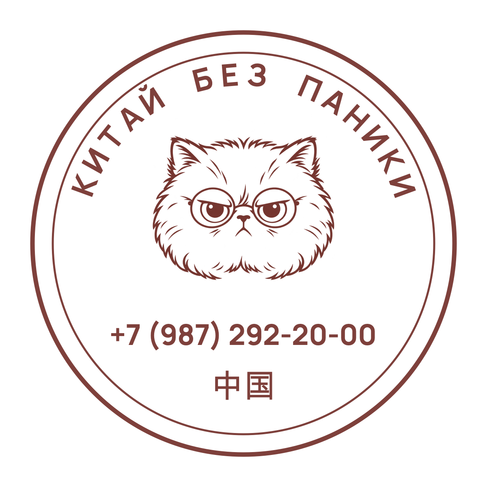

КИТАЙ БЕЗ ПАНИКИ
ВАШ МАРШРУТ ПОСТУПЛЕНИЯ
Порядок действий от выбора университета до получения вида на жительство. Отмечайте пункты — они сохранятся в этом браузере на этом устройстве.
Документы соберём.
Ничего не забудем.
Справка действует 6 месяцев — не проходите слишком рано.
Без этих документов визовый центр вернёт анкету на доработку — это минус неделя.
Жёсткий срок. Пропустите — это нарушение миграционного режима.
СОХРАНИТЕ СВОЙ РЕЗУЛЬТАТ
PDF сохранит текущие галочки. В скачанном файле их тоже можно менять — сохраните изменения в PDF-приложении. Изменения в PDF не переносятся на сайт. В другом браузере или после очистки данных отметки не восстановятся.
Отметьте пункты по мере готовности — страницу можно закрыть и вернуться позже.